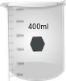
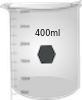

Manual
1. Turn on the instrument by clicking on the power button and wait for 30 min for initialization of the instrument.
2. Prepare three aqueous solutions of appropriate concentrations (say, 0.1 mM, 0.5 mM and 1.0 mM) of potassium permanganate. In this virtual lab experiment, click and drag on the concentration bar to select the solution for measurement. Begin with the lowest concentration solution. (Why?)
3. Click on the beaker to take a clean, dry beaker.
4. Click on the volumetric flask to pour the solution into the clean, dry beaker.
5. Click on the micropipette to collect appropriate quantity of solution from the beaker.
6. Take a cuvette by clicking on it.
7.Pour the solution from the micropipette into the cuvette by clicking on the cuvette. (In real measurements, the cuvette is filled to about two-third of its volume.)
8.Click on the spectrophotometer lid to open it.
9.Click on the cuvette to place it in the sample holder. One has to use water as the sample blank or reference in this measurement. Here a double beam spectrophotometer is shown. In this case, one can place the sample in the sample holder and the sample bank or reference in the reference holder simultaneously.
10. Run the wavelength scan by clicking on the Computer monitor and then on the Scan button and observe the wavelength scan. In the real spectrophotometer operation, an appropriate wavelength range of incident light for the sample can be chosen and the wavelength scan are run via the accompanied computer software. One can run the scan in absorbance or transmittance mode. The scan data is stored in the computer with a file name. If the spectrophotometer is a single beam instrument, then first the sample blank or reference is taken in a cuvette and the wavelength scan is run followed by the sample. One has to subtract the reference data from the sample data for respective wavelengths.
11.Click on Reset button to start new measurement.
12.Repeat the measurement with next higher concentration and so on.
13.Collect all data by clicking on the Data tab.
14.Plot the absorbance data of the sample at various wavelengths for different concentrations and determine the wavelength of maximum absorptions i.e., spectral peak-positions.
15.Plot the absorbance values for a particular wavelength (say, 525 nm) vs. concentration and calculate linear regression.
16.Repeat the plotting of the absorbance values vs. concentration for two other wavelengths say, 545 nm and 570 nm and calculate linear regressions.
17.Construct similar three plots taking transmittance in place of absorbance values vs. concentration for the above three wavelengths and calculate linear regressions.
18.Verify the Beer Law observing whether absorbance and transmittance values have linear correlation with concentration or not.
19.Normalize absorbance measurements to 1 mM concentration by dividing the absorbance data by the corresponding concentration for a given wavelength. Are the normalized data (within experimental error) concentration -specific at a given wavelength? Discuss your results.


 
